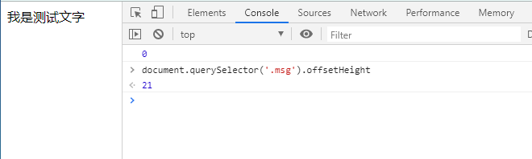
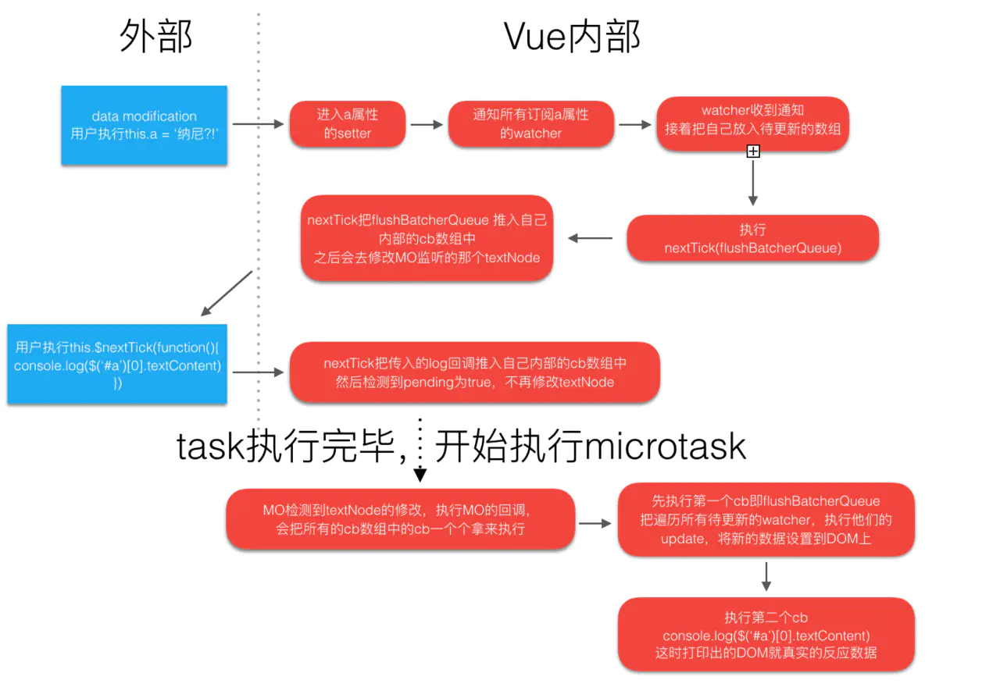

理解Process.nextTick原理，深入理解Vue的nextTick~
Node.js中的process.nextTick
Node.js中有一个nextTick函数和Vue中的nextTick命名一致。讲一下Node.js中的nextTick的执行机制：
setTimeout(function() {
console.log('timeout')
})
process.nextTick(function(){
console.log('nextTick 1')
})
new Promise(function(resolve){
console.log('Promise 1')
resolve();
console.log('Promise 2')
}).then(function(){
console.log('Promise Resolve')
})
process.nextTick(function(){
console.log('nextTick 2')
})
在Node环境（10.3.0版本）中打印的顺序： Promise 1 > Promise 2 > nextTick 1 > nextTick 2 > Promise Resolve > timeout
Vue 中NextTick
例1：
<div id="app">
<div class="msg">
</div>
</div>
new Vue({
el: '#app',
data: function(){
return {
msg: ''
}
},
mounted(){
this.msg = '我是测试文字'
console.log(document.querySelector('.msg').offsetHeight) //0
}
})
这时不管怎么获取，文字的Div高度都是0；但是直接获取却是有值

例2：
export default {
data () {
return {
msg: 0
}
},
mounted () {
this.msg = 1
this.msg = 2
this.msg = 3
},
watch: {
msg () {
console.log(this.msg)
}
}
}
- 猜测：依次打印：1、2、3；
- 实际：只会输出一次：3。
Vue 异步更新
上述两个问题的发生，都是在给data中赋值后立马去查看数据导致的。由于“查看数据”这个动作是同步操作的，而且都是在赋值之后；因此给数据赋值操作是一个异步操作。
Vue官网对数据操作描述：
Vue在更新DOM时是异步执行的。只要侦听到数据变化，Vue将开启一个队列，并缓冲在同一事件循环中发生的所有数据变更。如果同一个watcher被多次触发，只会被推入到队列中一次。这种在缓冲时去除重复数据对于避免不必要的计算和DOM操作是非常重要的。然后，在下一个的事件循环“tick”中，Vue刷新队列并执行实际 (已去重的) 工作。Vue在内部对异步队列尝试使用原生的Promise.then、MutationObserver和setImmediate，如果执行环境不支持，则会采用setTimeout(fn, 0)代替。
Vue对于这个API的感情是曲折的，在2.4版本、2.5版本和2.6版本中对于nextTick进行反复变动，原因是浏览器对于微任务的不兼容性影响、微任务和宏任务各自优缺点的权衡。

Vue中NextTick源码（2.5）
/* @flow */
/* globals MessageChannel */
import { noop } from 'shared/util'
import { handleError } from './error'
import { isIOS, isNative } from './env'
const callbacks = []
let pending = false
function flushCallbacks () {
pending = false
const copies = callbacks.slice(0)
callbacks.length = 0
for (let i = 0; i < copies.length; i++) {
copies[i]()
}
}
// 在2.4中使用了microtasks ，但是还是存在问题，
// 在2.5版本中组合使用 macrotasks 和 microtasks，组合使用的方式是对外暴露 withMacroTask 函数
// Here we have async deferring wrappers using both microtasks and (macro) tasks.
// In < 2.4 we used microtasks everywhere, but there are some scenarios where
// microtasks have too high a priority and fire in between supposedly
// sequential events (e.g. #4521, #6690) or even between bubbling of the same
// event (#6566). However, using (macro) tasks everywhere also has subtle problems
// when state is changed right before repaint (e.g. #6813, out-in transitions).
// Here we use microtask by default, but expose a way to force (macro) task when
// needed (e.g. in event handlers attached by v-on).
// 2.5版本在 nextTick 中对于调用 microtask（微任务）还是 macrotask（宏任务）声明了两个不同的变量
let microTimerFunc
let macroTimerFunc
// 默认使用microtask（微任务）
let useMacroTask = false
// 这里主要定义macrotask（宏任务）函数
// macrotask（宏任务）的执行优先级
// setImmediate -> MessageChannel -> setTimeout
// setImmediate是最理想的选择
// 最Low的状况是降级执行setTimeout
// Determine (macro) task defer implementation.
// Technically setImmediate should be the ideal choice, but it's only available
// in IE. The only polyfill that consistently queues the callback after all DOM
// events triggered in the same loop is by using MessageChannel.
/* istanbul ignore if */
if (typeof setImmediate !== 'undefined' && isNative(setImmediate)) {
macroTimerFunc = () => {
setImmediate(flushCallbacks)
}
} else if (typeof MessageChannel !== 'undefined' && (
isNative(MessageChannel) ||
// PhantomJS
MessageChannel.toString() === '[object MessageChannelConstructor]'
)) {
const channel = new MessageChannel()
const port = channel.port2
channel.port1.onmessage = flushCallbacks
macroTimerFunc = () => {
port.postMessage(1)
}
} else {
/* istanbul ignore next */
macroTimerFunc = () => {
setTimeout(flushCallbacks, 0)
}
}
// 这里主要定义microtask（微任务）函数
// microtask（微任务）的执行优先级
// Promise -> macroTimerFunc
// 如果原生不支持Promise，那么执行macrotask（宏任务）函数
// Determine microtask defer implementation.
/* istanbul ignore next, $flow-disable-line */
if (typeof Promise !== 'undefined' && isNative(Promise)) {
const p = Promise.resolve()
microTimerFunc = () => {
p.then(flushCallbacks)
// in problematic UIWebViews, Promise.then doesn't completely break, but
// it can get stuck in a weird state where callbacks are pushed into the
// microtask queue but the queue isn't being flushed, until the browser
// needs to do some other work, e.g. handle a timer. Therefore we can
// "force" the microtask queue to be flushed by adding an empty timer.
if (isIOS) setTimeout(noop)
}
} else {
// fallback to macro
microTimerFunc = macroTimerFunc
}
// 对外暴露withMacroTask 函数
// 触发变化执行nextTick时强制执行macrotask（宏任务）函数
/**
* Wrap a function so that if any code inside triggers state change,
* the changes are queued using a (macro) task instead of a microtask.
*/
export function withMacroTask (fn: Function): Function {
return fn._withTask || (fn._withTask = function () {
useMacroTask = true
try {
return fn.apply(null, arguments)
} finally {
useMacroTask = false
}
})
}
// 这里需要注意pending
export function nextTick (cb?: Function, ctx?: Object) {
let _resolve
callbacks.push(() => {
if (cb) {
try {
cb.call(ctx)
} catch (e) {
handleError(e, ctx, 'nextTick')
}
} else if (_resolve) {
_resolve(ctx)
}
})
if (!pending) {
pending = true
if (useMacroTask) {
macroTimerFunc()
} else {
microTimerFunc()
}
}
// $flow-disable-line
if (!cb && typeof Promise !== 'undefined') {
return new Promise(resolve => {
_resolve = resolve
})
}
}
Vue中NextTick源码（2.6）
/* @flow */
/* globals MutationObserver */
import { noop } from 'shared/util'
import { handleError } from './error'
import { isIE, isIOS, isNative } from './env'
export let isUsingMicroTask = false
const callbacks = []
let pending = false
function flushCallbacks () {
pending = false
const copies = callbacks.slice(0)
callbacks.length = 0
for (let i = 0; i < copies.length; i++) {
copies[i]()
}
}
// 在2.5版本中组合使用microtasks 和macrotasks，但是重绘的时候还是存在一些小问题，
// 而且使用macrotasks在任务队列中会有几个特别奇怪的行为没办法避免，
// So又回到了之前的状态，在任何地方优先使用microtasks 。
// Here we have async deferring wrappers using microtasks.
// In 2.5 we used (macro) tasks (in combination with microtasks).
// However, it has subtle problems when state is changed right before repaint
// (e.g. #6813, out-in transitions).
// Also, using (macro) tasks in event handler would cause some weird behaviors
// that cannot be circumvented (e.g. #7109, #7153, #7546, #7834, #8109).
// So we now use microtasks everywhere, again.
// A major drawback of this tradeoff is that there are some scenarios
// where microtasks have too high a priority and fire in between supposedly
// sequential events (e.g. #4521, #6690, which have workarounds)
// or even between bubbling of the same event (#6566).
let timerFunc
// The nextTick behavior leverages the microtask queue, which can be accessed
// via either native Promise.then or MutationObserver.
// MutationObserver has wider support, however it is seriously bugged in
// UIWebView in iOS >= 9.3.3 when triggered in touch event handlers. It
// completely stops working after triggering a few times... so, if native
// Promise is available, we will use it:
/* istanbul ignore next, $flow-disable-line */
// task的执行优先级
// Promise -> MutationObserver -> setImmediate -> setTimeout
if (typeof Promise !== 'undefined' && isNative(Promise)) {
const p = Promise.resolve()
timerFunc = () => {
p.then(flushCallbacks)
// In problematic UIWebViews, Promise.then doesn't completely break, but
// it can get stuck in a weird state where callbacks are pushed into the
// microtask queue but the queue isn't being flushed, until the browser
// needs to do some other work, e.g. handle a timer. Therefore we can
// "force" the microtask queue to be flushed by adding an empty timer.
if (isIOS) setTimeout(noop)
}
isUsingMicroTask = true
} else if (!isIE && typeof MutationObserver !== 'undefined' && (
isNative(MutationObserver) ||
// PhantomJS and iOS 7.x
MutationObserver.toString() === '[object MutationObserverConstructor]'
)) {
// Use MutationObserver where native Promise is not available,
// e.g. PhantomJS, iOS7, Android 4.4
// (#6466 MutationObserver is unreliable in IE11)
let counter = 1
const observer = new MutationObserver(flushCallbacks)
const textNode = document.createTextNode(String(counter))
observer.observe(textNode, {
characterData: true
})
timerFunc = () => {
counter = (counter + 1) % 2
textNode.data = String(counter)
}
isUsingMicroTask = true
} else if (typeof setImmediate !== 'undefined' && isNative(setImmediate)) {
// Fallback to setImmediate.
// Techinically it leverages the (macro) task queue,
// but it is still a better choice than setTimeout.
timerFunc = () => {
setImmediate(flushCallbacks)
}
} else {
// Fallback to setTimeout.
timerFunc = () => {
setTimeout(flushCallbacks, 0)
}
}
export function nextTick (cb?: Function, ctx?: Object) {
let _resolve
callbacks.push(() => {
if (cb) {
try {
cb.call(ctx)
} catch (e) {
handleError(e, ctx, 'nextTick')
}
} else if (_resolve) {
_resolve(ctx)
}
})
if (!pending) {
pending = true
timerFunc()
}
// $flow-disable-line
if (!cb && typeof Promise !== 'undefined') {
return new Promise(resolve => {
_resolve = resolve
})
}
}